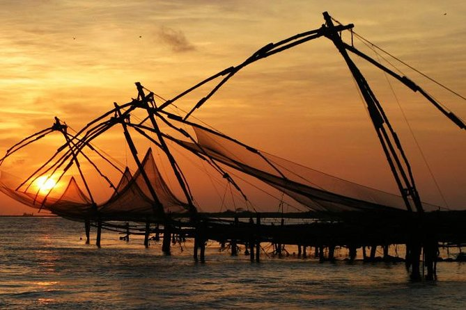

Kochi, also known by its former name Cochin is a major port city along the Malabar Coast of India bordering the Laccadive Sea. It is part of the district of Ernakulam in the state of Kerala. The city is also commonly referred to as Ernakulam. As of 2011, the Kochi Municipal Corporation had a population of 677,381 within an area of 94.88 km2, and the larger Kochi urban agglomeration had a total population of more than of 2.1 million within an area of 440 km2, making it the largest and the most populous metropolitan area in Kerala. Kochi city is also part of the Greater Cochin development region and is classified as a Tier-II city by the Government of India. The civic body that governs the city is the Kochi Municipal Corporation, which was constituted in the year 1967, and the statutory bodies that oversee its development are the Greater Cochin Development Authority (GCDA) and the Goshree Islands Development Authority (GIDA).